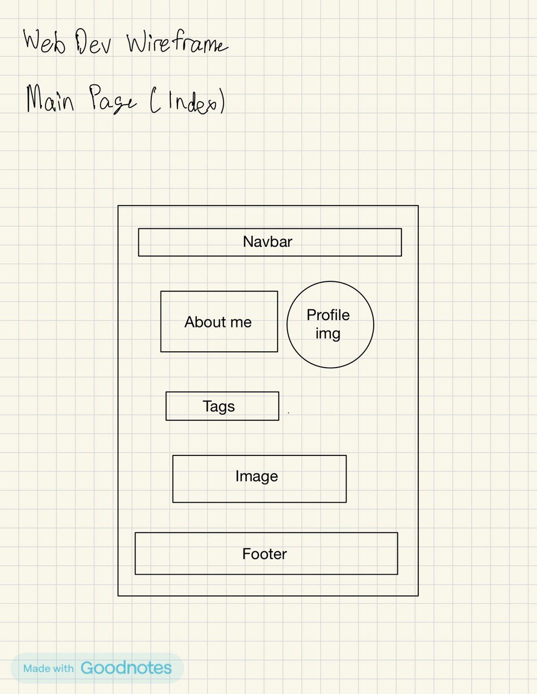
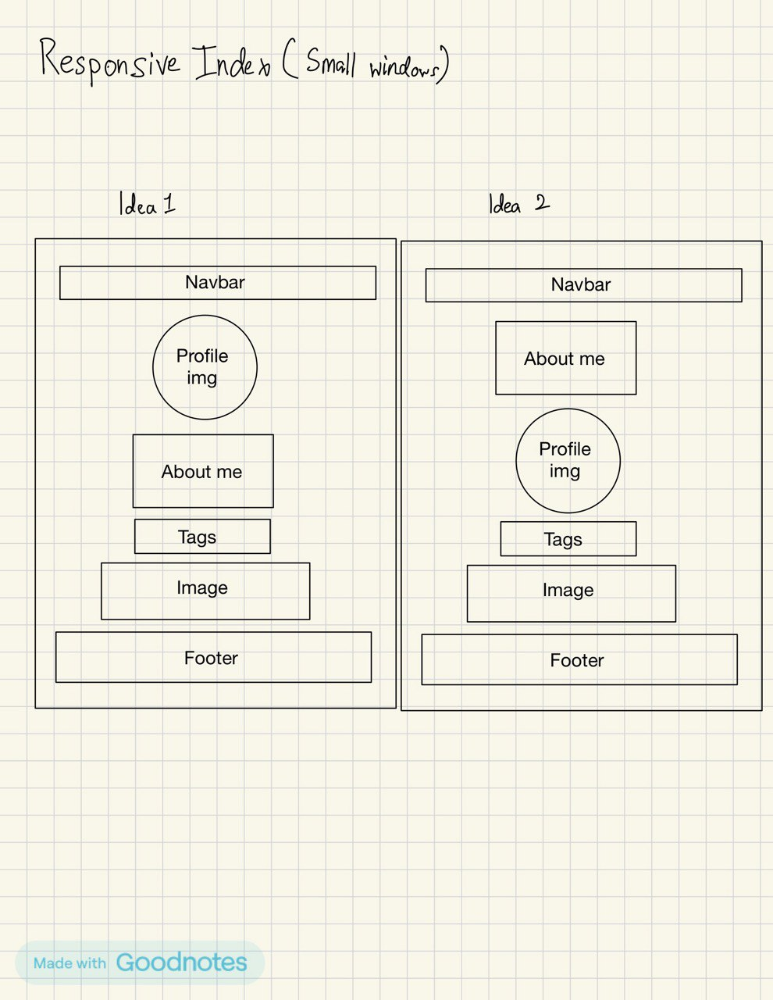
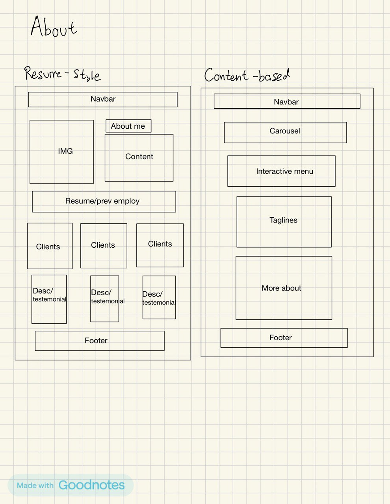
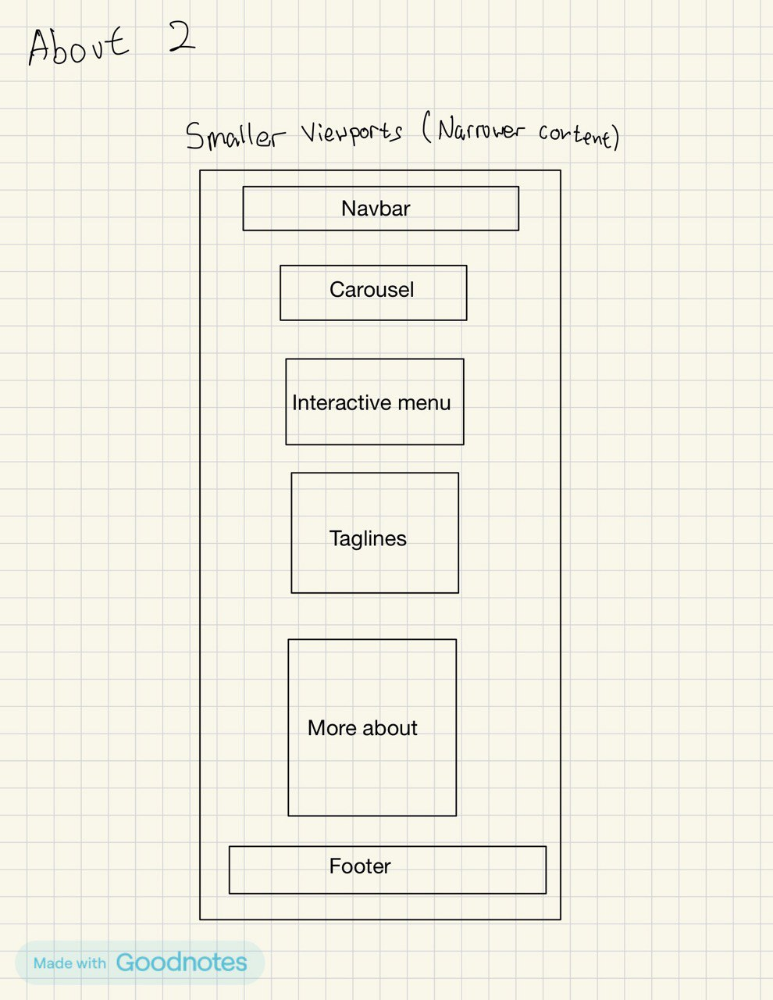
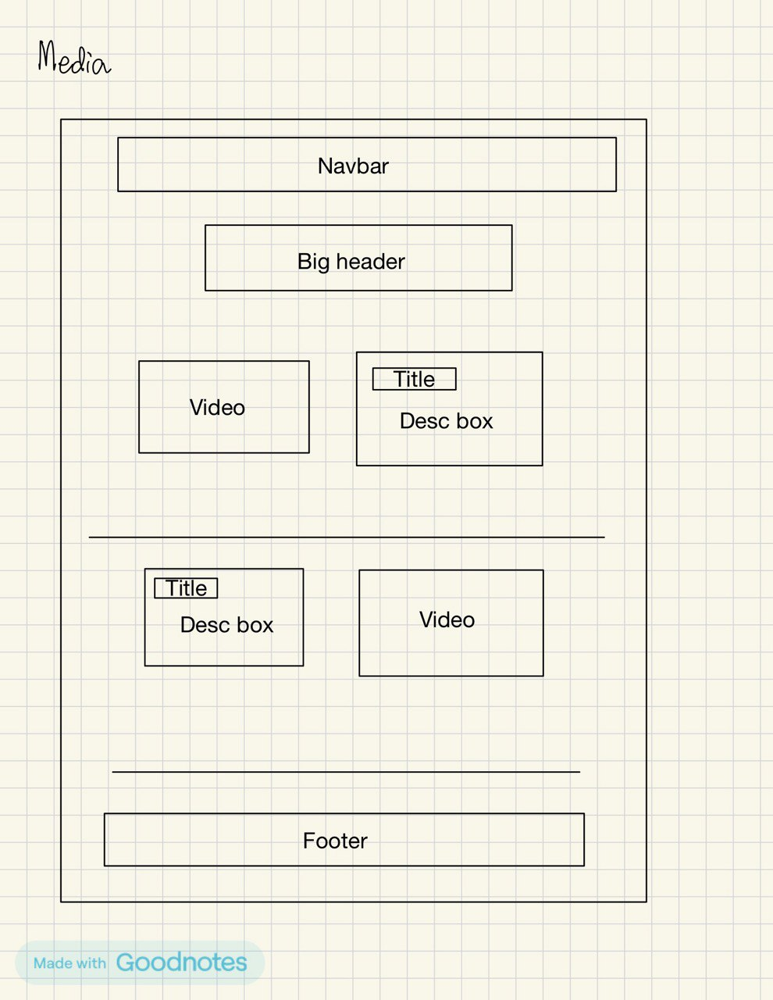
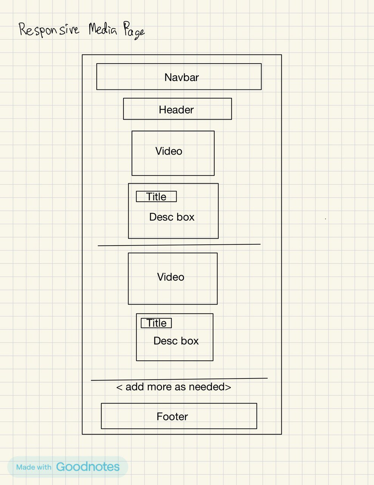
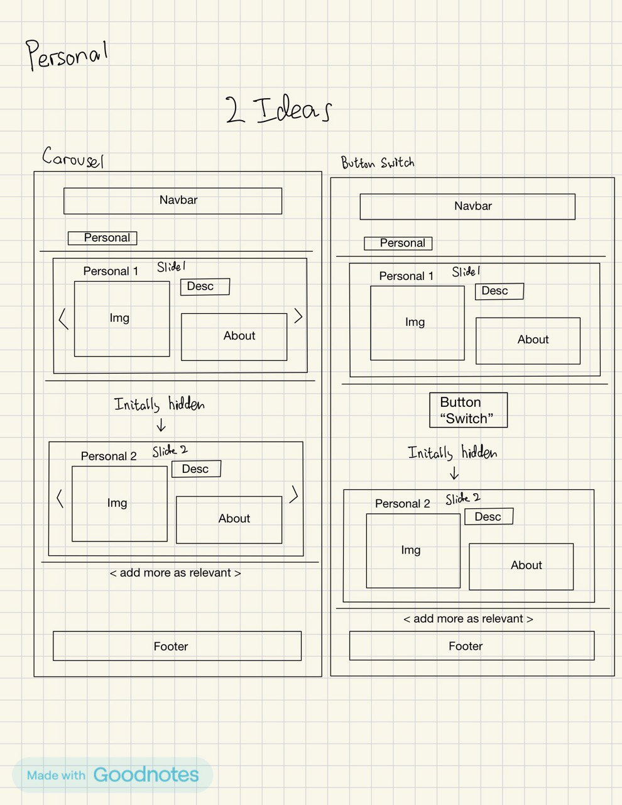
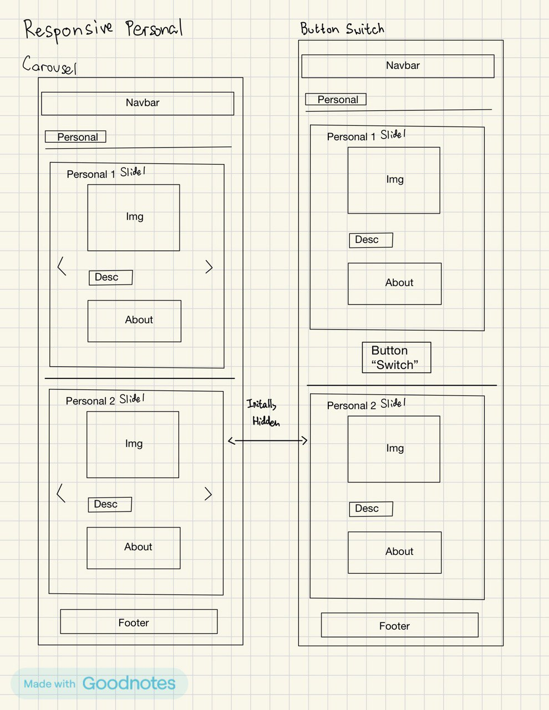
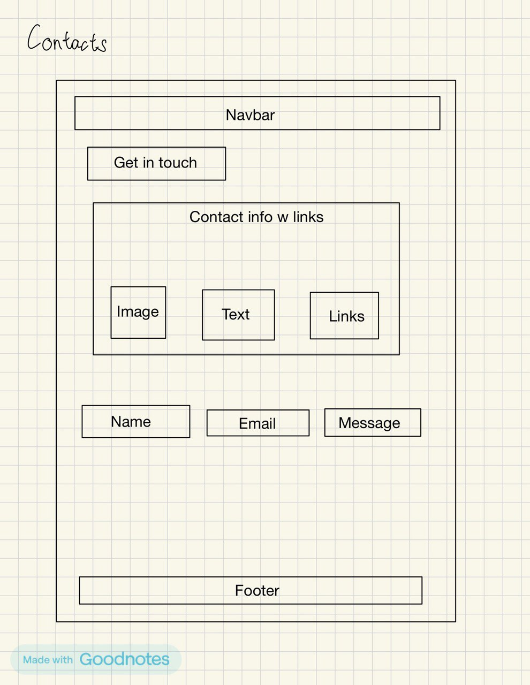
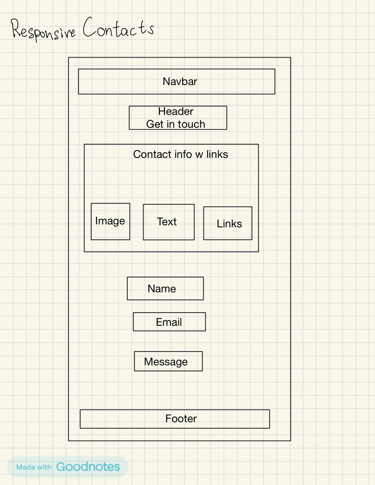

Park Ian Alexander
Back to site
Introduction
The core narrative of my portfolio site is showcasing my journey and skills as an engineer and coder showcasing innovative ideas to move both industries forward in terms of technological advancements and creative problem-solving using machine learning and artificial intelligence. This is represented by the hypothetical company called Hermes featuring automated delivery drones that showcase the aforementioned skills. The portfolio reflects the version of myself that focuses on my creativity, technical proficiency, user-centred design expertise and leadership skills, all of which are highly sought after abilities today and assumed to be close to the future job-scape in 2034. The primary audience includes potential employers in the tech industry, recruiters, and collaborators for my hypothetical company ‘Hermes’, who are looking for someone with strong leadership, innovative problem-solving, experience in modern Unmanned Aerial Vehicle(UAV) technical knowledge and coding expertise.
The 5 page website structure I have implemented follows a multi-section structure as designated by the assignment requirements to allow for intuitive navigation and clear presentation of my projects, skills, personal motivations and contact information.
Inspiration
- https://www.iamtamara.design
This site inspired me with its minimalist design, which highlights content without overwhelming the user. I learned the importance of keeping visual elements clean and uncluttered to make the site more accessible and professional. - https://www.franulovic.com
The use of dynamic scrolling animations in this site taught me to utilize smooth animations to enhance user experience without affecting site performance. - https://www.dalyabaron.com
From this site, I learned how to organize content logically and present a cohesive visual identity] by observing how they applied and structured the layout as well as using a consistent and effective colour scheme.
Accessibility
- I ensured that important headers and text blocks on the page include properly sized labels so that users can navigate the site using all screen readers.
- I selected a consistent blue and white color palette to ensure that text is readable for most users with color vision deficiencies.
- My website highlights links upon the cursor hovering over them, making it accessible for users with slight vision impairments who rely on easily visible feedback when using websites.
Usability
- Responsive Design: I implemented responsive design principles so the site adjusts smoothly and dynamically across various devices down to the smallest I could find, including desktops, tablets, and smartphones down to the iPhone SE at 375 pixels wide, ensuring a consistent user experience across most used devices.
- Intuitive Navigation: The site features a clear and simple navigation menu that is contained within both the header and the footer, making it easy for users to move between sections without confusion.
- Load Time Optimization: I minimized image and video sizes as well as compressing assets to reduce load times, ensuring users do not experience delays when accessing the site.
Learning
- Responsivity: I had to learn how to use CSS media queries and adapting my Flexbox attributes to make my layout adaptable across different screen sizes. I achieved this through online tutorials and documentation on responsive design principles as well as my own experimentation while using my web browser’s integrated inspect element function to test for responsiveness of my website.
- Colours, contrast and readability: I researched contrast In colours, ensuring that the site could be mostly effectively used by people with slight vision disabilities and that important elements and headers on the site are easily readable by users from the sizing of the words and contrasting colours.
- JavaScript animations: To implement smooth animations on the site, I learned how to use CSS transitions and the various options provided in JavaScript functions for efficient animation performance that manitpuate the DOM elements of my website.
Evlauation 1
One of the most successful aspects of my site was the responsive design. It functions well across a range of devices, creating a seamless user experience on mobile, tablet, and desktop. This was successful because of careful planning and the application of modern CSS techniques.
Another aspect of the work that was successful was the implementation of animations using javascript, my favourite being the animation of media items appearing after the user scrolls to sufficiently contain the element within the window. Apart from that specific example, I am very satisfied with all of my implemented javascript functions to enhance the user experience with the various animations provided.
Additionally, the visual design aligns with my intended personal brand, offering an attractive and professional appearance of an established entrepreneur and creator of a widely-used service.
Evaluation 2
One area that could be improved is accessibility of my website. I noticed that after planning, finishing the coding and applying colours and responsiveness in the webpage, certain features were not accommodating to persons with more complex colour vision disabilities and text blocks may be too small for people with visual impairments. In the future, I would like focus more on considering these potential users and more heavily consider these accessibility features in my planning work.
Resources
I used a variety of resources during the development of my portfolio, including:
- www.W3schools.com
Main source of basic reference resources on how to use and apply HTML and CSS formatting. - https://animista.net
I used some snippets of code for use in animating some of my icons within the website. - Various sources are listed in the code that address art and images used, however most media including the two videos provided are from my own personal gallery.
During the planning phase I did consider using Bootstrap for adaptive grid functionality and integrated styling formats such as a carousel, but decided not to use them as I found using regular CSS would be more adaptable and easier for me to understand and learn from.
Additionally, I included comments within my code to acknowledge any external libraries or code snippets I adapted for my use.
Other relevant links
- Master Media Queries And Responsive CSS Web Design Like a Chameleon!:
https://www.youtube.com/watch?v=K24lUqcT0Ms - Create a Responsive Portfolio Website with HTML CSS JS AI from scratch:
https://www.youtube.com/watch?v=O3m-OMfYgW8
Appendices
In the appendices, I’ve included my wireframes which reflect the responsive aspects of the site’s design. These diagrams illustrate the ideas for the structure of my site across various screen sizes and show how the elements adapt based on viewport dimensions.
Index


About


Projects


Personal


Contacts


Mock-ups
Index and about page

Projects/Media page

Personal page

Contacts page